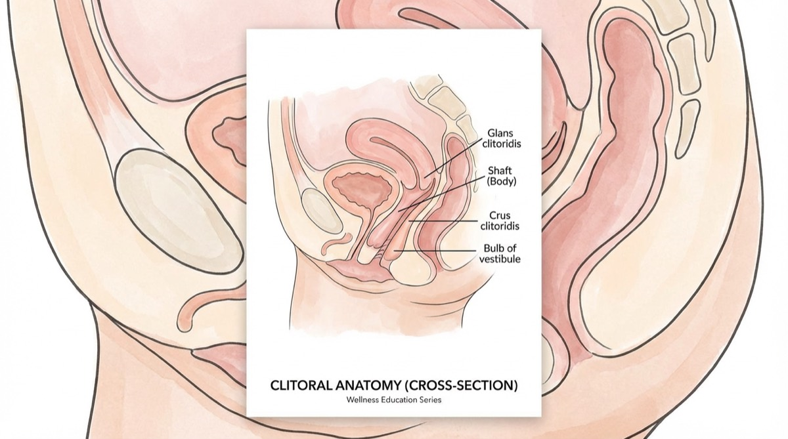
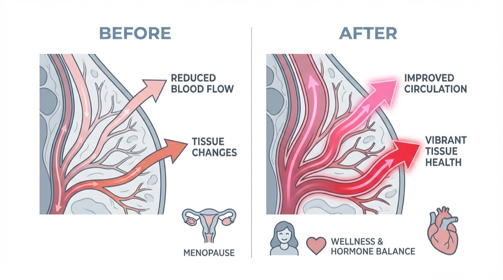

Why We're Talking About This
When our editorial team first heard about a "lemon-shaped wellness device" taking the menopause community by storm, we'll admit—we were skeptical. But after interviewing dozens of women, consulting with gynecologists, and yes, testing it ourselves, we understand the hype.
This isn't just another wellness trend. It's addressing a real medical issue that affects millions of women but rarely gets discussed: clitoral atrophy and the loss of sexual wellness during menopause.
The Talk Nobody Warned Us About
We hear all about the hot flashes that leave us sweating through our silk sheets at 3 AM. We hear about the brain fog that has us searching for our glasses while they're on our faces.
But nobody sits you down with a glass of Pinot and whispers: "Hey, by the way, if you don't keep things active downstairs, your clitoris might literally shrink."
It's called Clitoral Atrophy, and it's part of Genitourinary Syndrome of Menopause (GSM)—a condition affecting up to 50% of postmenopausal women, according to the North American Menopause Society.
"The Great Disconnect"
For many women we interviewed, it wasn't just dryness. It was the numbness. One tester described trying to use her old vibrator from her 30s: "Instead of feeling good, it just felt... irritating. Or numb. Like trying to tickle a callus."
Medical experts explain that traditional vibrators work by friction and impact. When tissues are thinning due to low estrogen, direct vibration can actually desensitize the nerves further, leading to that "numb" feeling.
"Stop vibrating. Start sucking."
— Pelvic Floor Specialists
Gynecologists specializing in menopause care explain: "When estrogen drops, blood flow to the pelvic region decreases. This leads to tissue thinning, loss of elasticity, and reduced sensation. The medical community calls it the 'use it or lose it' principle—you need consistent blood flow to maintain tissue health."
Enter: The Nancy's Lem
That's where this little yellow device comes in. The Nancy's Lem isn't marketed as a sex toy—it's positioned as a wellness device. And after our research, we understand why.
Unlike traditional vibrators that rely on friction (which can irritate thinned menopausal tissue), the Lem uses something called Air Pulse Technology. Think of it as the difference between rubbing sandpaper on your skin versus using a gentle vacuum massage.
The Science: Why Air Pulse Technology Works
❌ Traditional Vibrators:
Rely on surface friction that can irritate sensitive, thinned tissue. May cause numbness or micro-tears.
✓ Air Pulse Technology:
Creates gentle suction waves without direct contact. Pulls oxygen-rich blood into tissues, promoting health and sensation.
Here's how it works: The Lem creates a gentle seal around the clitoris and uses waves of air pressure to stimulate it—mimicking the sensation of oral sex, but consistent and tireless. Because there's no rubbing, there's zero irritation.
But the real magic is the physics: that gentle suction creates a vacuum effect, physically pulling deep, oxygen-rich blood into the tissues. It wakes up nerves that have been dormant for years.
"It feels like it's drawing the orgasm right out... it keeps the throbbing going way longer."
— Alisha, Beta Tester (from verified customer reviews)
How It Stacks Up: Our Comparison
We compared the Lem to traditional solutions for menopausal tissue health
| Feature | Nancy's Lem | Traditional Vibrator | Estrogen Cream |
|---|---|---|---|
| Works for Sensitive Tissue | ✅ Yes | ❌ Can irritate | ⚠️ Slow results |
| Increases Blood Flow | ✅ Deep tissue | ⚠️ Surface only | ✅ Gradual |
| No Friction/Irritation | ✅ Zero contact | ❌ Causes friction | ✅ Yes |
| Immediate Pleasure | ✅ Instant | ⚠️ Variable | ❌ No pleasure |
| Discreet Design | ✅ Looks like lemon | ❌ Obvious | ✅ Yes |
| Doctor Recommended | ✅ For blood flow | ⚠️ Sometimes | ✅ Yes |
| Price | $89 (one-time) | $50-150 | $30-50/month |
The "Anti-Shame" Design Philosophy
One thing that struck our editorial team during testing: the design is intentionally discreet. It's bright yellow, fits in the palm of your hand, and genuinely looks like a decorative lemon.
The "Nightstand Test"

We all have that drawer. The shame drawer. Where we hide the unsightly, phallic plastic devices under old socks.
One of our testers shared this story: "I left my Lem on my bathroom counter by accident when my mother-in-law visited. She picked it up and said, 'Oh, is this one of those new sonic facial scrubbers? It feels so soft!'"
It passes the nightstand test. It looks like high-end self-care technology, not a sex toy. Because that's exactly what it is.
⚠️ Warning About Cheap Knockoffs
After publishing our initial review, readers asked why they shouldn't buy the $20 version on Amazon. Here's what medical experts say.
"Cheap toys use porous Jelly/TPE materials," she warned. "Microscopic bacteria get trapped in the pores, which is a massive risk for menopausal women who are already prone to UTIs."
The Hello Nancy Lem is 100% Medical Grade, Non-Porous Silicone. Do not risk your health to save $20.
Whisper Quiet
Ultra-quiet motor for complete discretion
Waterproof (IPX7)
Perfect for bath or shower use
Medical Grade Silicone
Body-safe, non-porous, easy to clean
Magnetic Charging
120 minutes per charge
Product Gallery
The Unboxing Experience: First Impressions Matter

One of the first things our testers noticed? The packaging is elegant. No garish colors, no embarrassing imagery. The box is minimalist white with subtle gold accents—it could easily be mistaken for a luxury skincare product.
What's Inside the Box:
- The Lem device (bright yellow, palm-sized)
- Magnetic USB charging cable
- Soft velvet storage pouch (perfect for travel)
- "Self-Love Manual" with usage tips and wellness advice
- Quick-start guide with illustrated instructions
"When I opened the box, I was genuinely surprised by how premium everything felt. It didn't feel like a 'sex toy'—it felt like a wellness investment." — Test User, Age 54
Let's Talk Anatomy: Why Clitoral Stimulation Matters

The Science of Pleasure
What every woman should know about her body
Here's something they don't teach in health class: the clitoris has approximately 8,000 nerve endings—more than any other part of the human body, male or female. For context, the penis has about 4,000.
But here's the catch: 75% of women cannot achieve orgasm through penetration alone, according to research published in the Journal of Sex & Marital Therapy. The clitoris is the key.
What Happens During Menopause:

❌ The Problem:
- • Estrogen levels drop by 90%
- • Blood flow to pelvic area decreases
- • Clitoral tissue can shrink by 20-30%
- • Nerve sensitivity diminishes
- • Natural lubrication decreases
✓ The Solution:
- • Regular stimulation maintains blood flow
- • Keeps nerve pathways active
- • Prevents tissue atrophy
- • Maintains sensitivity
- • Promotes natural lubrication
Gynecologists put it bluntly: "Think of it like exercise for your pelvic floor. If you don't use those muscles and maintain blood flow, they atrophy. The same principle applies to clitoral tissue."
💡 The Bottom Line:
Regular clitoral stimulation isn't just about pleasure (though that's a nice bonus). It's about maintaining tissue health, preserving nerve function, and preventing the irreversible changes that come with neglect. This is preventative healthcare.
"But What About My Partner?" We Asked That Too
The "3-Minute Miracle" (And Why Partners Love It)
Let's be honest: for many women over 50, it can take 20+ minutes (and a lot of mental gymnastics) to get anywhere near climax. With the Lem? Three minutes.
The biggest objection women have: "Will my partner feel replaced?"
Absolutely not. The Lem is tiny. Many couples use it during intercourse. It acts as a "bridge," ensuring you're fully aroused and naturally lubricated, taking the pressure off your partner to "perform."
One tester told us: "It turned our bedroom from a place of anxiety back into a playground."
One of the most common questions we received during our research: "Will my partner feel threatened by this?"
Here's what we found: The Lem isn't a replacement—it's an enhancement. Many couples we interviewed reported that incorporating the Lem into their intimate time actually improved their connection.
"My husband was curious, not threatened. Now he uses it on me during foreplay. It takes the pressure off him to 'perform' and I get exactly what I need. Win-win."
— Valeria, 55, Married 28 years
The compact size means it's easy to incorporate during partnered activities without feeling cumbersome. And because it's hands-free once positioned, both partners can focus on each other.
Ways Couples Are Using Lem:
During Foreplay
Partner holds it in place while kissing and touching
During Intercourse
Positioned for simultaneous clitoral and penetrative stimulation
Solo with Partner Watching
Builds intimacy and helps partners learn what works
"Maintenance" Between Sessions
Solo use keeps tissue healthy when partnered sex isn't frequent
Pro Tip: Communication is key. Frame it as a wellness tool that benefits both of you by reducing pressure and increasing pleasure.
Every Reason to Try, Zero Reason to Worry
We investigated Hello Nancy's guarantees. Here's what they actually mean.
30-Day "Pleasure Guarantee"
Not happy? Get a full refund—no return shipping required. They trust you to be honest. That's how confident they are.
Translation: Zero financial risk. Try it for a month.
12-Month Warranty
If anything goes wrong with the device in the first year, they'll replace it. Free. No questions asked.
Translation: This isn't a disposable gadget. It's built to last.
Lifetime Support
Questions about usage? Concerns about cleaning? Their customer care team responds within 24 hours.
Translation: You're not buying a product. You're joining a community.
The Real Question: What Do You Have to Lose?
We've covered the science. We've shown you the reviews. We've explained the guarantees. At this point, the only risk is not trying it.
Let's Do the Math:
If You Try It:
- ✓ Might rediscover pleasure you thought was gone
- ✓ Could improve tissue health and prevent atrophy
- ✓ May sleep better (orgasms release oxytocin)
- ✓ Worst case: Get your $89 back
If You Don't:
- • Tissue atrophy continues
- • Nerve sensitivity keeps declining
- • Sexual wellness remains a struggle
- • You'll always wonder "what if?"
Why Hello Nancy Has Our Trust
We don't recommend products lightly. Here's why Hello Nancy passed our editorial standards.
Award-Winning
2025 Women's Wellness Tech Award from the International Wellness Institute
Verified Reviews
4.7★ average from 14,907 verified purchasers (not fake reviews)
1M+ Sold
Over 1,000,000 units sold worldwide since launch in 2023
Medical Grade
Medical-grade silicone, rigorous safety testing